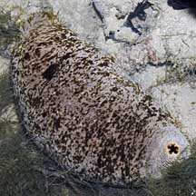
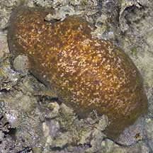
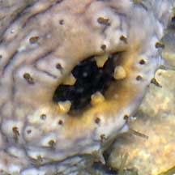
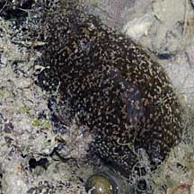
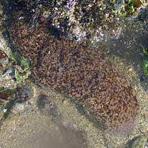
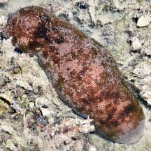

|
|
| sea cucumbers text index | photo index |
| Phylum Echinodermata > Class Holothuroidea |
| White-rumped
sea cucumber Actinopyga lecanora Family Holothuriidae updated Apr 2020 Where seen? This large fat sea cucumber with a white ring around its back end is commonly seen on many of our Southern shores. Sometimes in quite large numbers (one every few metres), well distributed (not clumped together). Usually among coral rubble, and living hard and soft corals. Elsewhere, it is considered uncommon and occurs in very low densities on rocky and reefy areas. It is said to be predominantly nocturnal, during the day hiding under large stones or crevices in the reefs. It is sometimes called the 'stone fish sea cucumber' because it is firm and looks like a smooth stone when disturbed; bloating up into a rounded, smooth shape and retracting its tube feet. However, when relaxed, the animal can be quite long and thin. Features: 15-20cm long. Body may be elongated into a long sausage-like shape, or contracted into a more rounded loaf-shape or even into a more globular oval shape. Surface somewhat smooth with long, thin tube feet, sparsely distributed all over. Sometimes, the sea cucumber is seen with many tube feet on the underside. We have not been able to observe the feeding tentacles in the wild. Colours variable ranging from shades of brown to golden yellow or white, sometimes with blotches, sometimes a uniform colour. |
 Pulau Pawai, Dec 09 |
 Pulau Hantu, Jul 07 |
 White ringed backside guarded by five 'teeth'. Pulau Hantu, Jul 07 |
| One distinguishing feature of this sea cucumber is the white or greyish
zone around the rear end. The anus is guarded by five calcareous yellowish teeth-like
structures. When feeding, the mouth is usually facing downwards towards
the ground. It does not have Cuvierian tubules. Human uses: This sea cucumber is among the edible ones harvested for the food trade, usually by hand using lead-bombs and free-diving. Tests indicate these sea cucumbers contain toxins. They must be properly prepared before they are safe to eat. |
| White-rumped sea cucumbers on Singapore shores |
On wildsingapore
flickr
|
| Other sightings on Singapore shores |
 Terumbu Berkas, Jan 10 |
 Pulau Biola, May 10 |
 Pulau Berkas, Feb 22 Photo shared by Loh Kok Sheng on facebook. |
|
Links
References
|